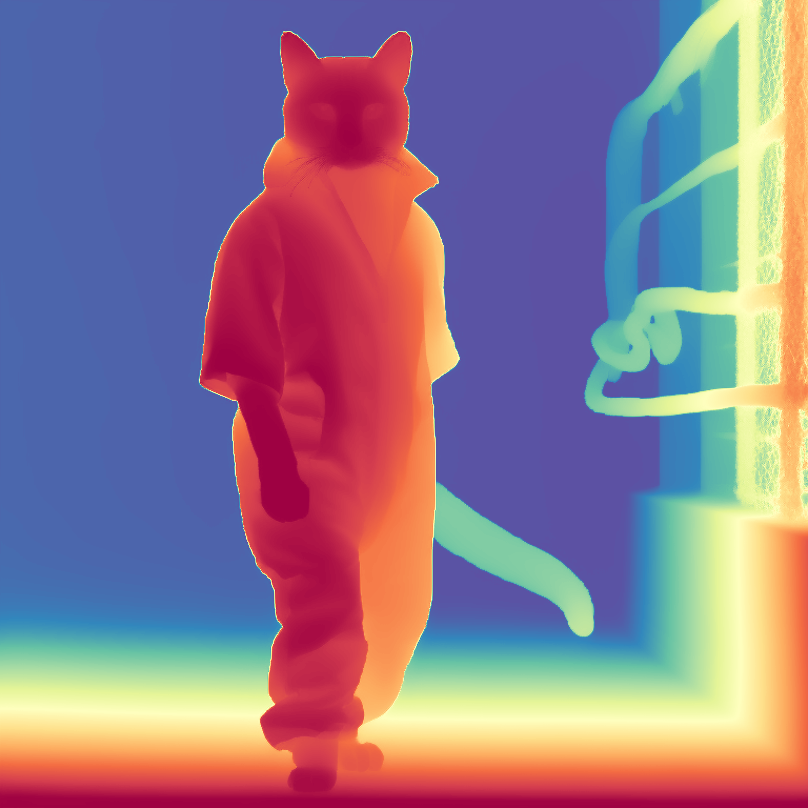
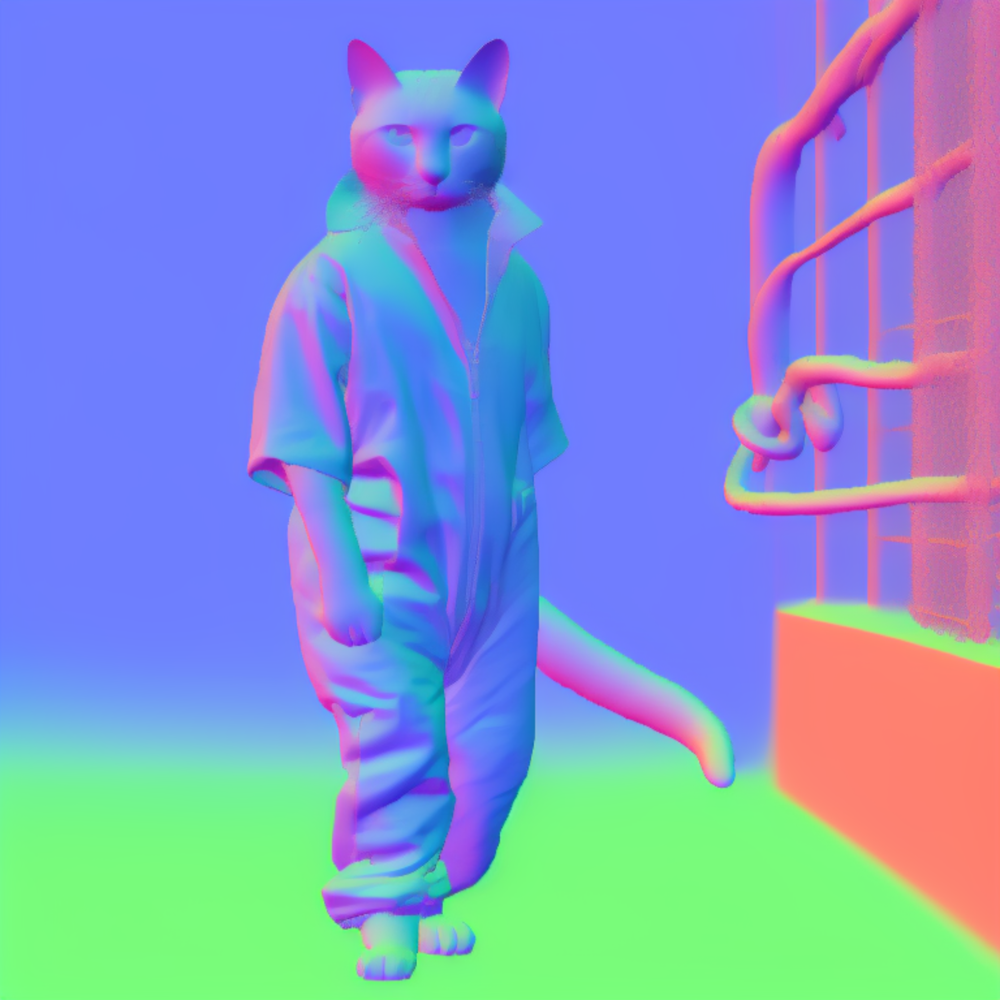

ECCV 2026
GeoNeXt
Video Generative Models as Geometry Learner
European Conference on Computer Vision 2026

The paper, method details, results, and code will be released after the arXiv submission. Please check back soon.
ECCV 2026


The paper, method details, results, and code will be released after the arXiv submission. Please check back soon.